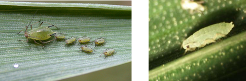
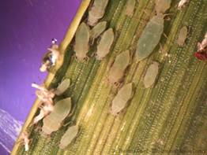

| Home |
| WHEAT |
| 1. Wheat Aphid |
| 2. Climbing cutworm / armyworm |
| 3. Ghujhia Weevil |
| 4. gram pod borer |
| 5. termites |
| 6. molya nematode / cyst nematode |
| 7. wheat-gall nematode |
| 8. Aphid |
| 9. hopper |
| 10. jassids |
| 11. wheat bug |
| 12. wheat thrips |
| 13. cut worms |
| 14. pink borer |
| 15. shootfly |
| 16. whorl maggot |
| 17. flea beetle |
| questions |
| Download Notes |
PESTS OF WHEAT :: Major Pests :: Wheat Aphid
1. Wheat Aphid: Macrosiphum miscanthi (Aphididae: Hemiptera)
Distribution and status: Widely distributed in wheat growing areas.
Host range: Wheat, barley, oats, Cynodon dactylon
Damage symptoms: Like other aphids, the nymphs and adults suck the sap from plants, particularly from their ears. They appear on young leaves or ears in large numbers during the cold and cloudy weather. The damage is particularly severe in years of cold and cloudy weather. A heavily manured, well-irrigated and succulent crop will harbour the pest for a longer period and suffer greater damage.
Bionomics: The insects are green, inert, louse like. The nymphs and the females look alike, except that the latter are larger. It breeds at a fast rate during cold weather and reaches the height of its population in February-March when the ears are ripening. The females give birth to young ones) and are capable of reproducing without mating. During the active breeding season, there are no males and the rate of reproduction is very high. When the wheat crop is ripe and the summer is approaching, the winged forms of both males and females are produced and they migrate to other plants like doob grass (Cynodon dactylon). It is not known how the pest passes the summer and the monsoon season. In October-November, the aphids again appear on wheat. If available, barley is preferred to wheat. The losses due to aphids have been reported upto 36 per cent.
 |
English grain aphid adult and nymphs on wheat leaf |
 |
ETL: 5 aphids/ear head
Management: Spray 375 ml of dimethoate 30 EC or oxydemeton methyl 25 EC or monocrotophos 36SL in 500 L of water per ha. Since the aphids appear first on the borders of the crop, spray only the infected strip to check further spread.